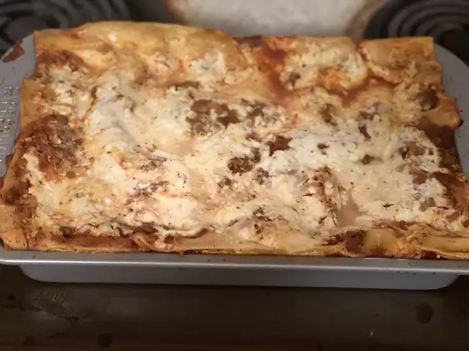

You’ll find the full, step-by-step recipe below — but here’s a brief overview of what you can expect when you make homemade easy lasagna: Cook and drain the ground beef, then stir in the spaghetti sauce and simmer. Combine the cottage cheese, 2 cups of mozzarella, eggs, half of the Parmesan, and seasonings. Assemble the lasagna according to the detailed recipe. Bake, covered, for 45 minutes. Uncover and continue baking for 10 minutes. What to Serve With Easy Lasagna For mouthwatering serving inspiration, explore our collection of Easy Side Dishes for Lasagna. Here are a few of the recipes you’ll find: Roasted Asparagus and Mushrooms Garlic Knots Arugula-Fennel Salad How to Store and Freeze Easy Lasagna Store the cooked lasagna in an airtight container in the refrigerator for up to five days. To reheat, cover the leftovers with foil and bake at 350 degrees F for about half an hour, or until the lasagna is heated through and the sauce is bubbly. To freeze, wrap the lasagna in at least one layer of storage wrap and at least one layer of aluminum foil. Freeze for up to three months. Thaw the frozen lasagna in the refrigerator overnight, then follow the reheating instructions above.